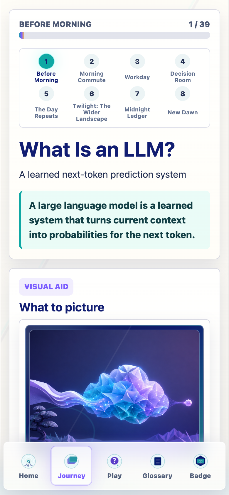
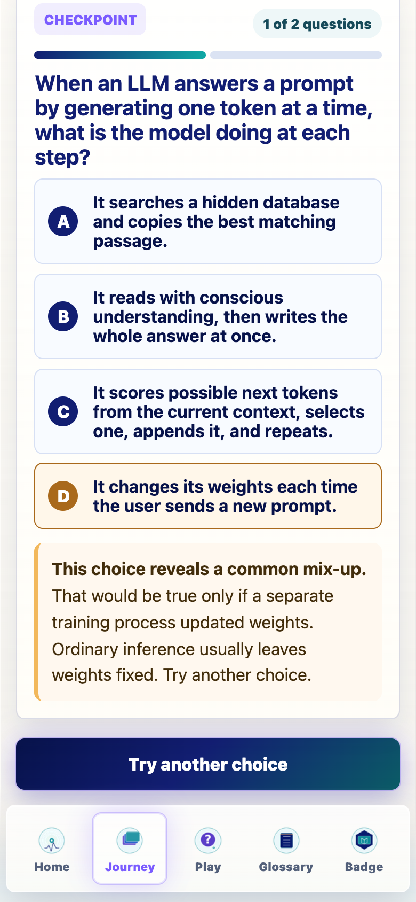
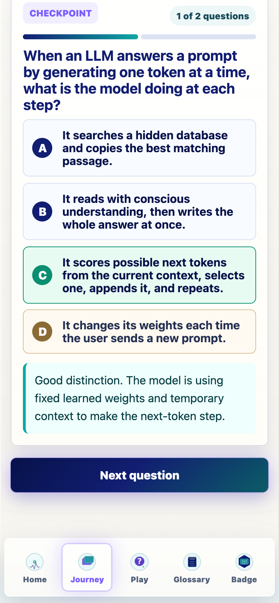
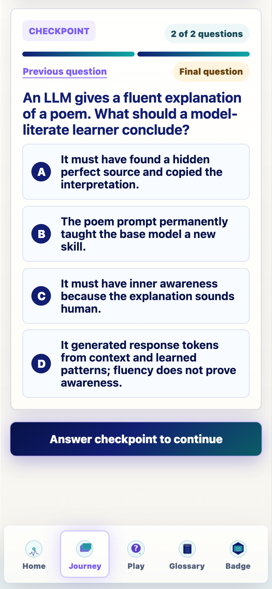
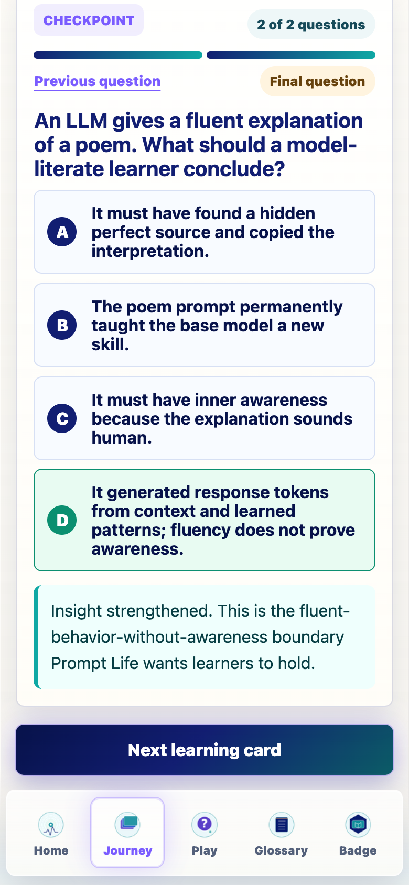
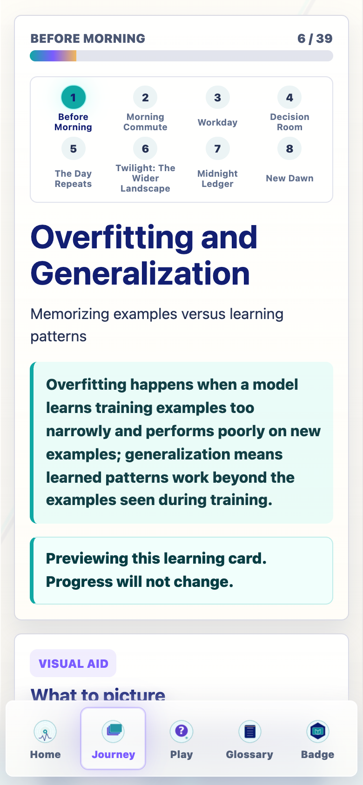

Prompt Life v0.27.10 First-Twelve Checkpoint Authoring Report
Executive summary
Version: 0.27.10-first-twelve-active-dev
Active bank: v0.27.10-first-twelve
First 12 Journey learning cards active by default; remaining 27 keep legacy single-question checkpoints.
Total active-development questions: 39; choices: 156; distractors: 117.
Normal learner UI must not show developer/fallback notes.
Held-out wording is replaced in active learner-facing copy.
Scroll behavior is repaired in runtime code for Next question and Next learning card.
Learner-facing copy cleanup
Removed normal learner UI note that mentioned development testing and legacy fallback parameters.
Replaced active-bank held-out wording with set-aside validation examples, new validation examples, or validation examples the model did not train on.
Legacy fallback instructions remain in README/docs/report only.
Scroll behavior implementation
Runtime uses refs and requestAnimationFrame-timed scrolling. New learning cards scroll the app shell to the top/title area. Next question sets a pending scroll target and scrolls the checkpoint panel after the DOM updates. Reduced motion uses instant scrolling.
First-six cleanup from v0.27.9
The first-six logic is preserved. Overfitting and Generalization replaces unexplained held-out wording. Normal learner UI no longer shows a development-pilot note.
Question counts
Learning card
Questions
Rationale
What Is an LLM?
2
What Is an LLM? keeps the reviewed v0.27.9 model-thinking question count for this first-twelve activation pass.
Where LLMs Fit
3
Where LLMs Fit keeps the reviewed v0.27.9 model-thinking question count for this first-twelve activation pass.
Rationalists vs Empiricists
3
Rationalists vs Empiricists keeps the reviewed v0.27.9 model-thinking question count for this first-twelve activation pass.
Training
4
Training keeps the reviewed v0.27.9 model-thinking question count for this first-twelve activation pass.
Pretraining
4
Pretraining keeps the reviewed v0.27.9 model-thinking question count for this first-twelve activation pass.
Overfitting and Generalization
3
Overfitting and Generalization keeps the reviewed v0.27.9 model-thinking question count for this first-twelve activation pass.
Fine-Tuning
3
Three questions cover the durable/temporary boundary, a product scenario, and the relationship to alignment without overloading a focused card.
Alignment
4
Four questions are warranted because alignment mixes durable training, runtime controls, evaluation, and human-use boundaries.
Inference
4
Four questions fit because inference is a dense gateway concept connecting fixed weights, temporary states, context, and generation.
Prompt vs Response
3
Three questions cover the given/generated boundary, append-and-repeat trace, and a common permanent-learning misconception.
Tokenization
3
Three questions cover chunk shape, representation sequence, and the token-versus-meaning misconception.
Token IDs
3
Three questions cover lookup-key mechanics, meaning misconception, and generated-token flow.
Next-six authoring details
Fine-Tuning
Lesson ID: fine-tuning · Stage: Before Morning · Questions: 3
Primary: Distinguish durable fine-tuning from temporary prompt, RAG, and sampling-time steering.
Boundary: Fine-tuning changes weights or adapter behavior for future runs; prompting and RAG shape the current context; sampling chooses a token during generation.
Question-count rationale: Three questions cover the durable/temporary boundary, a product scenario, and the relationship to alignment without overloading a focused card.
A team wants a support assistant to answer in a durable house style across future conversations. Which move is closest to fine-tuning?
v02710-fine-tuning-q1-correct: Run additional training that changes weights or adapter behavior for future responses. Correct Feedback: Good distinction. Fine-tuning is durable shaping after pretraining.
v02710-fine-tuning-q1-better-prompt: Write one clearer prompt for the current chat.
Feedback: Not quite. A prompt can steer the current run, but fine-tuning changes future behavior through training. Misconception: prompting vs durable fine-tuning · Term: prompt · Source: same-card Rationale: Tempting because prompts can strongly steer one answer.
v02710-fine-tuning-q1-rag: Retrieve one policy PDF into the current context.
Feedback: Close, but RAG adds temporary context. Fine-tuning is a training process that durably shapes behavior. Misconception: retrieval/context vs training · Term: RAG · Source: same-card Rationale: Tempting because retrieved text can improve one answer.
v02710-fine-tuning-q1-sampling: Sample the next token from the current probability cloud.
Feedback: That describes decoding during inference. It chooses a token; it does not adapt the model for future runs. Misconception: decoding vs training · Term: sampling · Source: same-card Rationale: Tempting because sampling is part of response generation.
A base model is adapted on thousands of institution-specific examples, then later answers new users in that style. What changed most directly?
v02710-fine-tuning-q2-correct: The adapted model’s weights or adapter behavior can carry that pattern into later inference runs. Correct Feedback: Insight strengthened. Fine-tuning makes a reusable model change, not just a one-chat hint.
v02710-fine-tuning-q2-context-only: Only the current context window got larger.
Feedback: Not quite. A larger context window is temporary input space; fine-tuning changes reusable behavior. Misconception: context window vs fine-tuned behavior · Term: context window · Source: nearby-stage Rationale: Tempting because context can also carry institution-specific text.
v02710-fine-tuning-q2-memory: The model became conscious of the institution’s norms.
Feedback: That gives the model too much mind. The behavior can be shaped without conscious commitment to norms. Misconception: mind/metaphor overreach · Term: alignment · Source: explicit-confusable Rationale: Tempting because the assistant may sound norm-aware.
v02710-fine-tuning-q2-rag-search: The model must search the institution’s files every time.
Feedback: Close, but fine-tuning and retrieval are different. Retrieval may be added, but fine-tuned behavior can persist in weights or adapters. Misconception: retrieval vs fine-tuning · Term: retrieval · Source: same-stage Rationale: Tempting because many institutional assistants also use search.
If fine-tuning is used for alignment, what does that mean about future model behavior?
v02710-fine-tuning-q3-correct: Training can make some instruction-following or preference patterns more likely in later responses. Correct Feedback: Good distinction. Fine-tuning can support alignment by durably shaping output patterns.
v02710-fine-tuning-q3-perfect-safety: Every future answer is guaranteed safe and true.
Feedback: Not quite. Fine-tuning can improve behavior, but it does not guarantee truth or safety. Misconception: alignment/fine-tuning as guarantee · Term: alignment · Source: nearby-stage Rationale: Tempting because alignment sounds like solving behavior.
v02710-fine-tuning-q3-system-prompt-only: Only the visible system prompt changed for one session.
Feedback: Close, but a system prompt steers the current run. Fine-tuning is durable training. Misconception: runtime steering vs durable training · Term: system prompt · Source: same-card Rationale: Tempting because system prompts can steer behavior strongly.
v02710-fine-tuning-q3-inner-values: The model acquired human values and moral agency.
Feedback: That gives the model too much mind. Fine-tuning changes output patterns; it does not create moral agency. Misconception: behavior shaping vs moral agency · Term: alignment · Source: explicit-confusable Rationale: Tempting because aligned behavior can sound value-driven.
Alignment
Lesson ID: alignment · Stage: Before Morning · Questions: 4
Primary: Reason about alignment as behavior shaping across training, system design, evaluation, and runtime controls without mistaking it for conscience or guaranteed truth.
Boundary: Alignment can use fine-tuning, preference optimization, system prompts, policies, filters, and evaluation; it shapes behavior but does not make the model morally aware.
Question-count rationale: Four questions are warranted because alignment mixes durable training, runtime controls, evaluation, and human-use boundaries.
An alignment-shaped assistant refuses a harmful request and follows a safer instruction instead. What should a model-literate learner conclude?
v02710-alignment-q1-correct: Its behavior was shaped toward instructions and safety boundaries, but that does not prove moral understanding. Correct Feedback: Good distinction. Alignment shapes behavior; it is not magic morality.
v02710-alignment-q1-conscious: The model must understand morality the way a person does.
Feedback: That gives the model too much mind. Refusal behavior can be shaped without human moral understanding. Misconception: aligned behavior vs moral agency · Term: alignment · Source: same-card Rationale: Tempting because refusals can sound principled.
v02710-alignment-q1-truth: Every answer from the assistant is now guaranteed true.
Feedback: Not quite. Alignment can shape behavior, but it does not guarantee factual truth. Misconception: alignment vs truth guarantee · Term: truth · Source: nearby-stage Rationale: Tempting because safer behavior can feel more trustworthy.
v02710-alignment-q1-no-model: The LLM stopped using learned weights and became a rulebook.
Feedback: Close, but an aligned product can still use a learned model plus rules, filters, or policies. Misconception: alignment controls vs learned model · Term: rule-based AI · Source: explicit-confusable Rationale: Tempting because aligned products may use rules or filters.
v02710-alignment-q2
model trace · model-trace · mechanism terms: alignment, fine-tuning, system prompt, policy filter
A product uses instruction fine-tuning, a system prompt, and a policy filter around one LLM. Which alignment map is most useful?
v02710-alignment-q2-correct: Some alignment changes can be durable training changes, while other controls steer or filter the current run. Correct Feedback: Insight strengthened. Alignment can happen through several layers, not one magic switch.
v02710-alignment-q2-all-weights: Every alignment layer permanently rewrites the model weights.
Feedback: Not quite. Fine-tuning may change weights, but system prompts and filters can steer behavior at runtime. Misconception: runtime control vs durable weight update · Term: weight update · Source: same-card Rationale: Tempting because all layers affect visible behavior.
v02710-alignment-q2-only-prompt: Alignment is only a better prompt typed by the user.
Feedback: Close, but alignment can include training, policies, evaluation, and runtime controls beyond the user prompt. Misconception: alignment vs user prompting only · Term: prompt · Source: nearby-stage Rationale: Tempting because prompts are visible and powerful.
v02710-alignment-q2-sampling-only: Alignment is the same thing as sampling the most probable token.
Feedback: Sampling chooses a next token from probabilities. Alignment shapes or constrains behavior around that process. Misconception: alignment vs decoding · Term: sampling · Source: nearby-stage Rationale: Tempting because both affect the final response.
Why do teams evaluate aligned models with tests and human feedback after training or deployment?
v02710-alignment-q3-correct: Because shaped behavior can still fail, drift, or create unexpected tradeoffs in new situations. Correct Feedback: Good distinction. Alignment needs evaluation; it is not a one-time guarantee.
v02710-alignment-q3-conscious-test: To check whether the model has developed a conscience.
Feedback: Not quite. Evaluation checks behavior and outcomes, not inner conscience. Misconception: evaluation vs consciousness · Term: evaluation · Source: same-card Rationale: Tempting because evaluations judge behavior.
v02710-alignment-q3-no-need: Because aligned models no longer need human review.
Feedback: This choice overclaims. Aligned systems can still need review, monitoring, and accountability. Misconception: alignment vs human review · Term: human review · Source: nearby-stage Rationale: Tempting because alignment sounds like completion.
v02710-alignment-q3-loss-only: Because lower training loss alone proves the model is safe.
Feedback: Close, but loss alone is not a full safety or usefulness evaluation. Misconception: loss vs safety/behavior evaluation · Term: loss · Source: nearby-stage Rationale: Tempting because loss is an important training signal.
A guardrail blocks one unsafe response from reaching the user. What changed most directly?
v02710-alignment-q4-correct: A policy or filter layer affected the visible response; that does not necessarily mean the model weights changed. Correct Feedback: Good distinction. Guardrails can be runtime controls around a model.
v02710-alignment-q4-finetune: The base model was definitely fine-tuned at that moment.
Feedback: Not quite. A filter can block output during runtime without retraining the model. Misconception: filtering vs fine-tuning · Term: fine-tuning · Source: same-card Rationale: Tempting because both can change visible behavior.
v02710-alignment-q4-truth: The response became guaranteed factual because it passed a guardrail.
Feedback: Passing a guardrail is not the same as being true. Evidence and review can still matter. Misconception: policy compliance vs truth · Term: truth · Source: author-created misconception Rationale: Tempting because allowed output may feel approved.
v02710-alignment-q4-awareness: The model realized the request was wrong.
Feedback: That gives the model too much mind. The visible behavior can come from shaped model behavior or surrounding controls. Misconception: guardrail behavior vs awareness · Term: llm · Source: explicit-confusable Rationale: Tempting because the refusal may sound reflective.
Primary: Explain ordinary inference as fixed weights plus temporary context-shaped computation, not durable learning.
Boundary: Inference uses learned weights to compute temporary internal states and next-token scores; it normally does not update weights or training data.
Question-count rationale: Four questions fit because inference is a dense gateway concept connecting fixed weights, temporary states, context, and generation.
v02710-inference-q1
mechanism in action · mechanism · mechanism terms: inference, current context, fixed weights, temporary activations
During ordinary inference, the current context enters the model. What changes temporarily, and what usually stays fixed?
v02710-inference-q1-correct: Temporary activations and hidden states change; learned weights usually stay fixed. Correct Feedback: Good distinction. Inference uses the map without redrawing it.
v02710-inference-q1-weights-change: The learned weights change after every user prompt.
Feedback: Not quite. Ordinary inference can use context, but it usually does not rewrite weights. Misconception: inference vs training update · Term: training · Source: same-card Rationale: Tempting because the model may adapt within a conversation.
v02710-inference-q1-dataset: The training dataset changes to include the new prompt.
Feedback: This choice reveals a common mix-up. A prompt can be current context without joining the training dataset. Misconception: prompt/context vs training data · Term: training data · Source: same-card Rationale: Tempting because prompts feel like new information.
v02710-inference-q1-conscious: The model’s conscious attention shifts to the user’s intent.
Feedback: That gives the model too much mind. Inference computes temporary vectors; it is not conscious attention. Misconception: attention/activation vs awareness · Term: attention · Source: nearby-stage Rationale: Tempting because the response may seem attentive.
In one inference step, which trace best matches the model’s next-token path?
v02710-inference-q2-correct: Context enters a forward pass, temporary states form, logits are produced, and sampling can choose a token. Correct Feedback: Insight strengthened. That is the live next-token path through inference.
v02710-inference-q2-training-loop: Example enters training, loss updates weights, and a future model checkpoint is saved.
Feedback: Close, but that is a training path. Inference uses existing weights to produce the next-token scores. Misconception: training loop vs inference trace · Term: training · Source: nearby-stage Rationale: Tempting because it is also a model computation path.
v02710-inference-q2-rag-loop: Retriever searches outside documents, then the model permanently learns the snippets.
Feedback: Retrieval can add context before inference, but it does not by itself make the model permanently learn snippets. Misconception: retrieval/context vs durable learning · Term: RAG · Source: nearby-stage Rationale: Tempting because retrieval may happen before generation.
v02710-inference-q2-tokenizer-only: Tokenizer splits text and the answer appears without model layers.
Feedback: Tokenization prepares input, but inference still runs model layers to produce scores. Misconception: tokenization vs model forward pass · Term: tokenization · Source: same-stage Rationale: Tempting because tokenization is an early required step.
A chatbot remembers an earlier line in the same conversation and uses it in the next answer. What is the best model-level explanation?
v02710-inference-q3-correct: The earlier line is still in the current context, so fixed weights can use it during inference. Correct Feedback: Good distinction. Context can feel like memory while still being temporary input.
v02710-inference-q3-weight-memory: The earlier line was written into the model’s weights.
Feedback: Not quite. Same-conversation context is temporary input, not necessarily a weight update. Misconception: context vs durable memory · Term: memory · Source: explicit-confusable Rationale: Tempting because the model appears to remember.
v02710-inference-q3-training-now: The chatbot fine-tuned itself on the earlier line.
Feedback: Close, but adaptation within a context window is not the same as fine-tuning. Misconception: ordinary inference vs fine-tuning · Term: fine-tuning · Source: same-stage Rationale: Tempting because the answer adapts to the conversation.
v02710-inference-q3-search-all: The model searched every document it was pretrained on.
Feedback: This describes search better than ordinary inference. The model can use visible context without searching training sources. Misconception: inference vs search/retrieval · Term: retrieval · Source: nearby-stage Rationale: Tempting because the answer may include earlier information.
v02710-inference-q4
causal consequence · causal-consequence · mechanism terms: inference, weights, future behavior, current run
If ordinary inference normally does not update weights, what follows for future conversations?
v02710-inference-q4-correct: A useful answer now does not automatically teach the base model to behave differently tomorrow. Correct Feedback: Insight strengthened. Inference can be useful without being durable training.
v02710-inference-q4-auto-learn: Every good answer automatically becomes permanent skill.
Feedback: Not quite. Durable skill changes require training or another model-update process. Misconception: inference vs durable learning · Term: training · Source: same-card Rationale: Tempting because the response looks like successful practice.
v02710-inference-q4-no-context: The current prompt cannot affect the answer at all.
Feedback: Close, but fixed weights can still respond differently to different current contexts. Misconception: context influence vs weight update · Term: prompt · Source: same-card Rationale: Tempting because weights stay fixed.
v02710-inference-q4-no-risk: There is no need to review outputs because inference is temporary.
Feedback: This choice overclaims. Temporary outputs can still affect people and decisions, so review can matter. Misconception: temporary computation vs output risk · Term: human review · Source: nearby-stage Rationale: Tempting because temporary sounds harmless.
A user gives a complete prompt, then the model begins writing response tokens. Which boundary matters most?
v02710-prompt-response-q1-correct: Prompt tokens are given to the model; response tokens are generated and then appended to context. Correct Feedback: Good distinction. Prompt is given; response is generated and appended.
v02710-prompt-response-q1-all-user: Both prompt and response tokens were typed by the user.
Feedback: Not quite. The user provides the prompt; the model generates response tokens. Misconception: prompt vs generated response · Term: response · Source: same-card Rationale: Tempting because both can appear together in the conversation transcript.
v02710-prompt-response-q1-all-at-once: The model writes the whole response at once after reading the prompt.
Feedback: Close, but the model generates response tokens step by step. Misconception: autoregressive generation vs full answer at once · Term: autoregression · Source: same-card Rationale: Tempting because the interface may show a smooth answer.
v02710-prompt-response-q1-weight-update: Each response token permanently updates the model’s weights.
Feedback: This choice reveals a common mix-up. Response tokens can shape the current run without updating weights. Misconception: generated context vs durable training · Term: training · Source: nearby-stage Rationale: Tempting because response-so-far shapes later tokens.
v02710-prompt-response-q2
model trace · model-trace · mechanism terms: next token, append, context, runs again
After the model chooses one next response token, what does the next inference step see?
v02710-prompt-response-q2-correct: The original prompt plus the response so far, including the newly appended token. Correct Feedback: Insight strengthened. The context grows as generated response tokens are appended.
v02710-prompt-response-q2-only-new-token: Only the newly chosen token, with the prompt removed.
Feedback: Not quite. The next step can use the prompt and response-so-far that remain in context. Misconception: context accumulation vs isolated token · Term: context window · Source: same-card Rationale: Tempting because the new token is the most recent event.
v02710-prompt-response-q2-weight-memory: A permanent memory of the token stored in model weights.
Feedback: Close, but using a token later in the run is context, not a weight update. Misconception: response-so-far vs weight memory · Term: weight · Source: nearby-stage Rationale: Tempting because the model uses the new token later.
v02710-prompt-response-q2-softmax-removed: No context, because softmax disappears after one token.
Feedback: Softmax can help choose a token, but the chosen token can still be appended to the next context. Misconception: decoding step vs context persistence · Term: softmax · Source: nearby-stage Rationale: Tempting because softmax is a later token-choice mechanism.
v02710-prompt-response-q3
misconception diagnosis · misconception-check · mechanism terms: response, prompt, training, current run
A generated response improves after the user adds a clarifying sentence. What changed most directly?
v02710-prompt-response-q3-correct: The current prompt/context changed, so the next response tokens were generated from better input. Correct Feedback: Good distinction. Better context can improve the current response without training the model.
v02710-prompt-response-q3-finetuned: The model was fine-tuned by the clarifying sentence.
Feedback: Not quite. A clarifying sentence can steer the current run; fine-tuning is additional training. Misconception: prompt steering vs fine-tuning · Term: fine-tuning · Source: same-stage Rationale: Tempting because the answer improves after feedback.
v02710-prompt-response-q3-conscious: The model understood its mistake like a person and decided to improve.
Feedback: That gives the model too much mind. Better output can come from better context. Misconception: human revision vs generated behavior · Term: llm · Source: explicit-confusable Rationale: Tempting because the interaction resembles human revision.
v02710-prompt-response-q3-no-effect: Prompts cannot affect generated response tokens.
Feedback: Close, but fixed weights still process different prompts into different response probabilities. Misconception: prompt influence vs fixed weights · Term: prompt · Source: same-card Rationale: Tempting because weights stay fixed during inference.
A tokenizer splits “startled.” into pieces like “start”, “led”, and “.” What should that tell a learner?
v02710-tokens-q1-correct: Tokens can be uneven text chunks, including word pieces and punctuation. Correct Feedback: Good distinction. Tokens are model-readable chunks, not always whole words.
v02710-tokens-q1-whole-word: Every token must be a complete dictionary word.
Feedback: Not quite. Tokenizers can split words, punctuation, spaces, or other chunks. Misconception: token vs word · Term: token · Source: same-card Rationale: Tempting because many displayed tokens look word-like.
v02710-tokens-q1-memory: Each token is a permanent memory stored in the model.
Feedback: This choice reveals a common mix-up. A token is a representation chunk, not memory by itself. Misconception: token vs memory · Term: memory · Source: author-created misconception Rationale: Tempting because tokens are reused in later processing.
v02710-tokens-q1-concept: Each token is exactly one human concept.
Feedback: Close, but token boundaries do not perfectly match human concepts or meanings. Misconception: token chunk vs meaning/concept · Term: embedding · Source: nearby-stage Rationale: Tempting because tokens often carry meaning clues.
Before transformer layers process text, which tokens-to-IDs-to-embeddings path comes first?
v02710-tokens-q2-correct: Text is split into tokens, tokens map to token IDs, and IDs look up embeddings. Correct Feedback: Insight strengthened. Tokenization starts the bridge from text to numerical computation.
v02710-tokens-q2-raw-english: Raw English sentences move through every layer without numerical representation.
Feedback: Not quite. The model needs numerical representations, starting with tokens and IDs. Misconception: raw text vs numerical representation · Term: tokenization · Source: same-card Rationale: Tempting because users see text at the interface.
v02710-tokens-q2-weights-first: Weights are rewritten before text becomes tokens.
Feedback: Close, but tokenization prepares the input; it does not rewrite weights. Misconception: tokenization vs training update · Term: weight · Source: nearby-stage Rationale: Tempting because weights are central to the model.
v02710-tokens-q2-response-first: The model generates the finished response before tokenization happens.
Feedback: Generation also uses tokens. Text needs token representation before model layers can process it. Misconception: generation order vs tokenization · Term: response · Source: same-stage Rationale: Tempting because users notice the final text first.
Both the user prompt and the generated response eventually appear as text. How does tokenization treat them?
v02710-tokens-q3-correct: Prompt text and generated response text can both be represented as tokens. Correct Feedback: Good distinction. Tokenization applies to text entering and leaving the generation loop.
v02710-tokens-q3-prompt-only: Only prompt text becomes tokens; response text skips token IDs.
Feedback: Not quite. Generated response tokens are token IDs before being displayed as text. Misconception: prompt token vs response token · Term: response token · Source: same-card Rationale: Tempting because the user sees the response as text.
v02710-tokens-q3-response-only: Only response text becomes tokens; prompts stay as raw English.
Feedback: Close, but prompts also need token representation before model processing. Misconception: prompt token vs raw prompt · Term: prompt token · Source: same-card Rationale: Tempting because prompts feel natural to humans.
v02710-tokens-q3-training: Tokenizing either one permanently trains the model.
Feedback: This choice reveals a common mix-up. Tokenization represents text; it does not update weights. Misconception: tokenization vs training · Term: training · Source: nearby-stage Rationale: Tempting because tokenization is a required model step.
After tokenization, the token “dog” maps to an integer ID. What does the model use that ID for next?
v02710-token-ids-q1-correct: To look up a learned starting vector in the embedding table. Correct Feedback: Good distinction. The ID is a lookup key for an embedding vector.
v02710-token-ids-q1-meaning: To store the complete meaning of dog inside the number itself.
Feedback: Not quite. The number itself is not the meaning; it points to learned numerical patterns. Misconception: ID number vs learned meaning pattern · Term: token ID · Source: same-card Rationale: Tempting because the ID consistently points to that token.
v02710-token-ids-q1-memory: To permanently remember this user’s sentence.
Feedback: This choice reveals a common mix-up. Token IDs represent chunks; they do not store a user memory. Misconception: representation vs durable memory · Term: memory · Source: author-created misconception Rationale: Tempting because IDs are reusable in model processing.
v02710-token-ids-q1-skip: To skip embeddings and tensors entirely.
Feedback: Close, but the ID is a lookup key; embeddings and tensors still carry numerical representation forward. Misconception: token ID vs embedding/tensor pipeline · Term: embedding · Source: same-card Rationale: Tempting because the ID is already numeric.
A learner says “982 means cat because the ID is the meaning.” What correction is most model-literate?
v02710-token-ids-q2-correct: 982 is a lookup number for a token; meaning comes from learned patterns around embeddings and model layers. Correct Feedback: Insight strengthened. The ID points into the system; it is not understanding by itself.
v02710-token-ids-q2-conscious: 982 means cat because the model consciously understands the number.
Feedback: That gives the model too much mind. A lookup number does not imply conscious understanding. Misconception: ID/meaning vs consciousness · Term: llm · Source: explicit-confusable Rationale: Tempting because the model uses the ID fluently.
v02710-token-ids-q2-truth: 982 guarantees every sentence about cats will be true.
Feedback: Not quite. Token IDs do not guarantee factual output. Misconception: token ID vs truth · Term: truth · Source: nearby-stage Rationale: Tempting because the token has a stable identity.
v02710-token-ids-q2-random-every-run: 982 is randomly redefined every time the user sends a prompt.
Feedback: Close, but token ID mappings are fixed for a tokenizer/model setup; sampling randomness is a different step. Misconception: stable tokenizer mapping vs per-run randomness · Term: tokenizer · Source: same-card Rationale: Tempting because sampling can be random later.
During generation, the model chooses a next response token ID before the user sees text. What happens after that?
v02710-token-ids-q3-correct: The chosen ID can be displayed as text and appended as a response token in the current context. Correct Feedback: Good distinction. Generated tokens are IDs before they become visible text.
v02710-token-ids-q3-weight-update: The chosen ID permanently updates the model weights.
Feedback: Not quite. The chosen token can affect the next context without changing weights. Misconception: generated token vs training update · Term: weight · Source: nearby-stage Rationale: Tempting because the token affects the next step.
v02710-token-ids-q3-raw-word: The model skips IDs and chooses only raw human words.
Feedback: Close, but the model works with token IDs before text is displayed. Misconception: token IDs vs raw text generation · Term: token · Source: same-card Rationale: Tempting because users see words on screen.
v02710-token-ids-q3-retrieve-source: The ID retrieves the original training document for that word.
Feedback: This describes retrieval better than token ID lookup. Token IDs point to token representations, not original documents. Misconception: token ID lookup vs retrieval/source · Term: retrieval · Source: nearby-stage Rationale: Tempting because lookup sounds like fetching a source.
Quality checklist
No vague “best definition” stems.
Questions name the mechanism/scenario explicitly.
Every question has 4 choices and exactly 1 correct answer.
Every wrong answer has feedback, misconception, source, and rationale.
Feedback maps by stable choiceId.
Runtime randomizes choice order and preserves no-reveal wrong answers.
Normal UI has no developer/fallback notes.
Learner-facing held-out wording is replaced or defined.
Verification and QA evidence
Final v0.27.10 checks passed on June 9, 2026. The first twelve Journey cards use the active checkpoint bank by default; the remaining twenty-seven cards keep their legacy single-question checkpoints. The app version shown in runtime is 0.27.10.
npm run typecheck: passed.
npm run build: passed with the existing Vite large-chunk warning.
npm run build:pages: passed with the existing Vite large-chunk warning. A first parallel run collided with dist cleanup while npm run build was also running; the sequential rerun passed.
npm run audit:answers: passed and includes the checkpoint-bank audit.
npm run audit:checkpoints: passed; it now validates the v0.27.10 active first-twelve bank.
Runtime QA summary
Normal learner UI does not show the old development-testing or fallback-parameter note.
Next question scrolls the newly rendered checkpoint panel into view.
Next learning card opens the next learning card at the title/top area.
Final checkpoint actions clear the bottom nav after the dock-aware pass.
The legacy fallback query restores the previous single-question checkpoint.
Learner-facing held-out wording is replaced. Preserved hits are identifier/CSS/report metadata only.
State
Heading
Count
Action
Forbidden note?
Held-out visible?
Quiz top
Nav top
what-is-q1-initial-390
What Is an LLM?
1 of 2 questions
Answer checkpoint to continue
No
No
4069
753
what-is-q1-wrong-390
What Is an LLM?
1 of 2 questions
Try another choice
No
No
-14
753
what-is-q1-correct-390
What Is an LLM?
1 of 2 questions
Next question
No
No
-14
753
what-is-q2-after-next-question-390
What Is an LLM?
2 of 2 questions
Answer checkpoint to continue
No
No
12
753
what-is-final-390
What Is an LLM?
2 of 2 questions
Next learning card
No
No
-13
753
where-llms-fit-after-next-card-390
Where LLMs Fit
1 of 3 questions
Answer checkpoint to continue
No
No
4260
753
fine-tuning-q1-390
Fine-Tuning
1 of 3 questions
Return to Journey
No
No
12
753
alignment-q1-320
Alignment
1 of 4 questions
Return to Journey
No
No
12
753
legacy-fallback-390
What Is an LLM?
1 of 1 question
Answer checkpoint to continue
No
No
12
753
inference-q1-desktop
Inference
1 of 4 questions
Return to Journey
No
No
79
809
overfitting-clean-copy-390
Overfitting and Generalization
1 of 3 questions
Return to Journey
No
No
3850
753
Screenshot gallery

What Is an LLM Q1 at 390px

Wrong answer feedback does not reveal correct answer

Correct Q1 with Next question

Next question scrolls checkpoint into view

Final checkpoint shows Next learning card above nav
Inference newly authored checkpoint at desktop width

Overfitting page with cleaned validation wording
Deep Research handoff
Review the Prompt Life v0.27.10 first-twelve checkpoint bank. Focus especially on the newly authored next-six learning cards. Evaluate whether each question makes the learner reason about the model rather than recall the curriculum. Check clarity, factual accuracy, distractor quality, misconception feedback, reading level, jargon, and badge-worthiness. Recommend edits, removals, and additions.